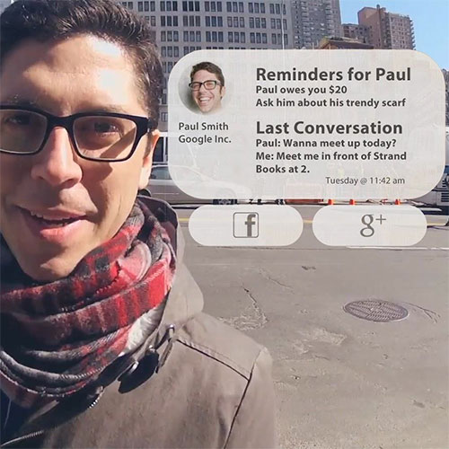
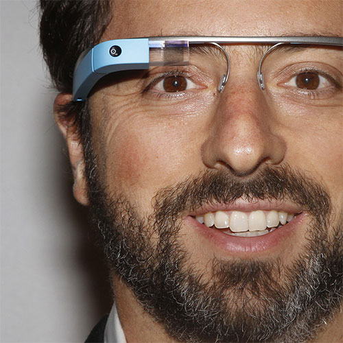
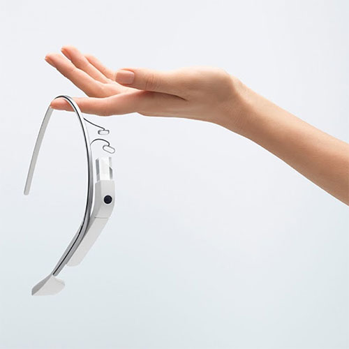
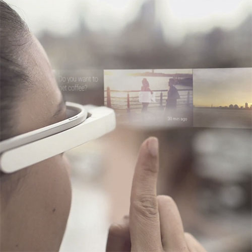
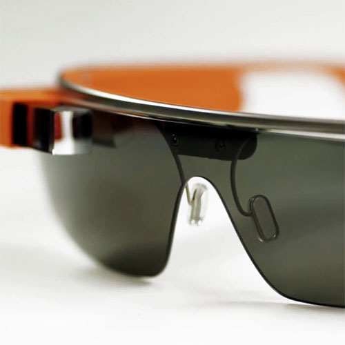
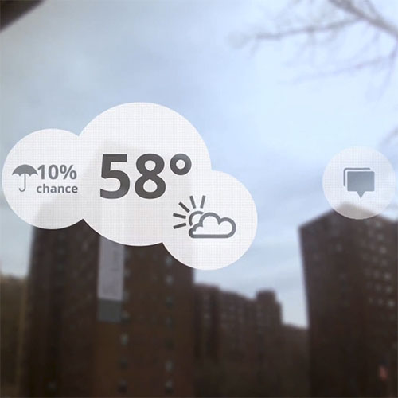

Glass > Fotos
Galeria de Imagens do Google Glass
por Gustavo Guanabara
Atualizado em 01/Maio/2013
por Gustavo Guanabara
Atualizado em 01/Maio/2013
Veja na nossa galeria de fotos várias belas imagens que mostram algumas das principais características do Google Glass,como recursos e propriedades que estão impressionando o mundo inteiro. Basta passar o mouse sobre uma das fotos para ver uma versão ampliada e com uma breve descrição.

Agenda e lembretes
Feito para lembrar seus compromissos.

Sergey Brin usando o Glass
teste

Leve e compacto
teste

Sensação de uma tela de 50"
teste

Vários tipos de lente
teste

Informações importantes
teste